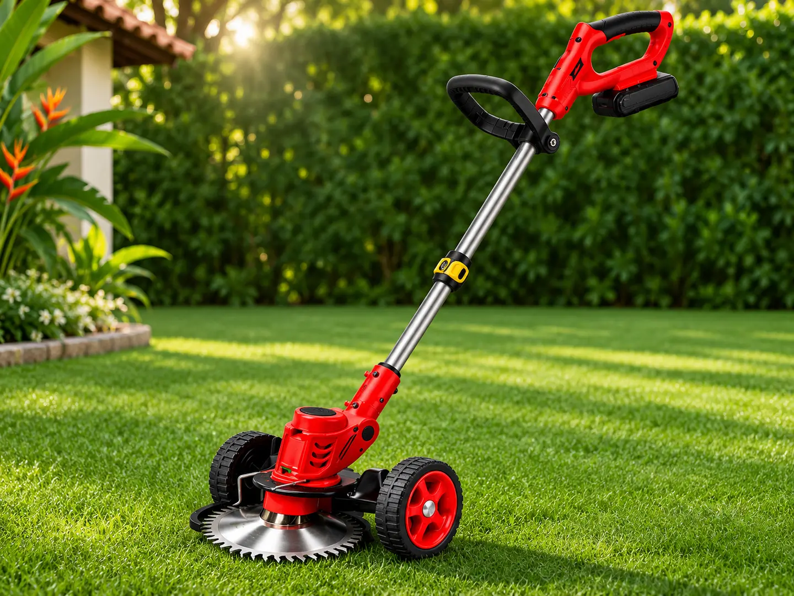
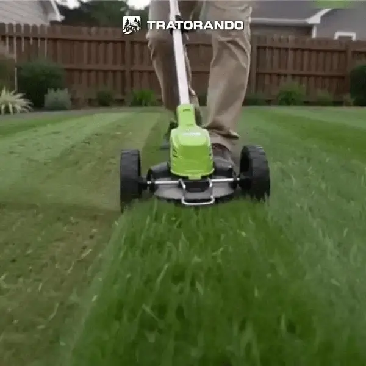
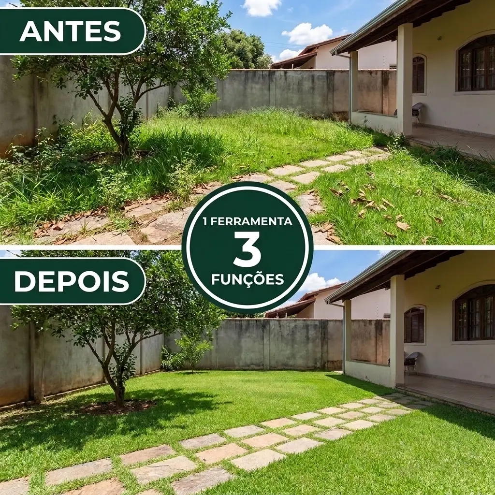
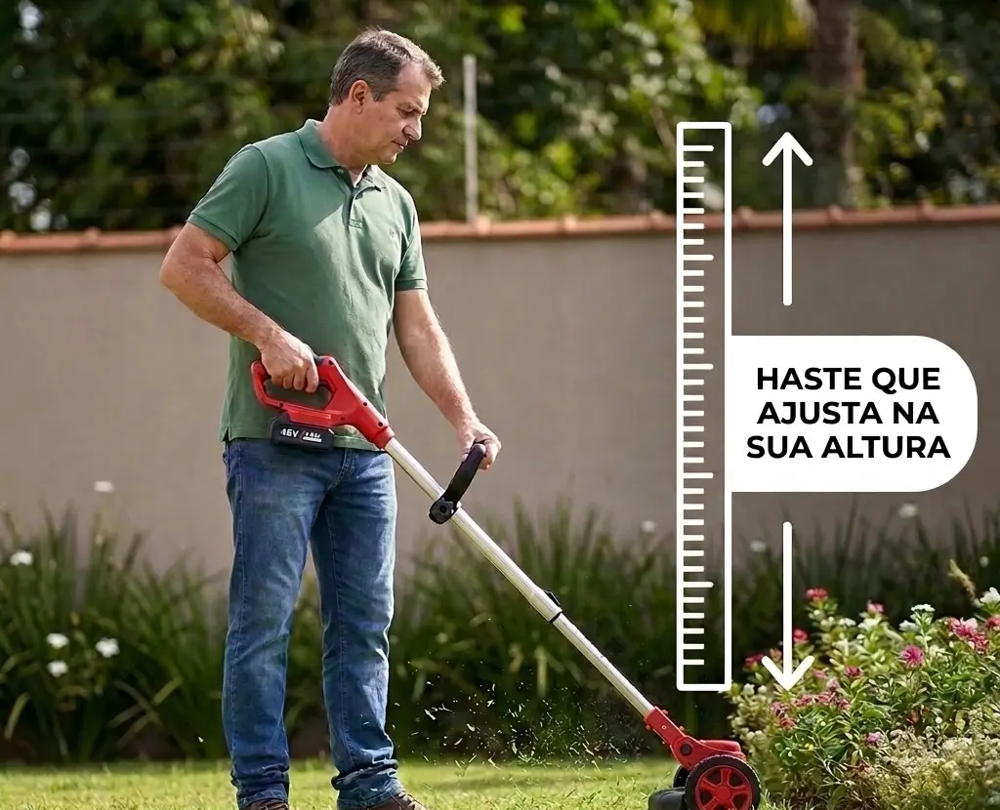
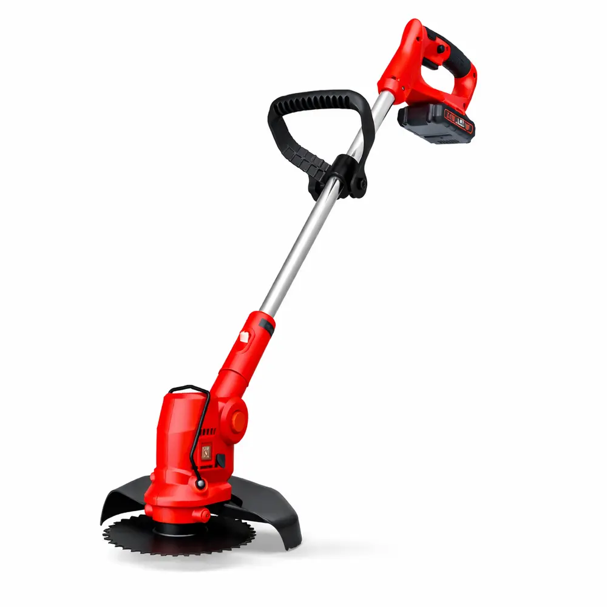
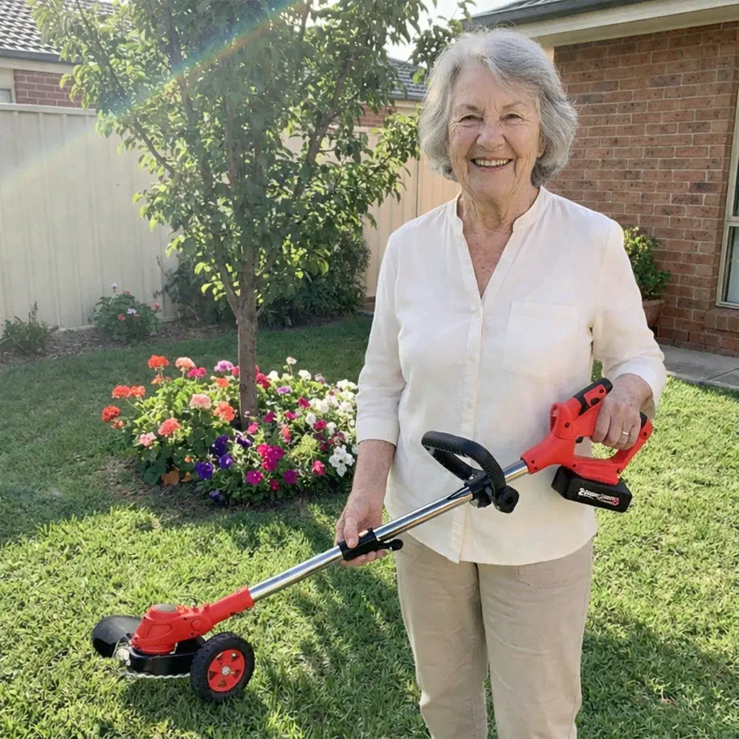
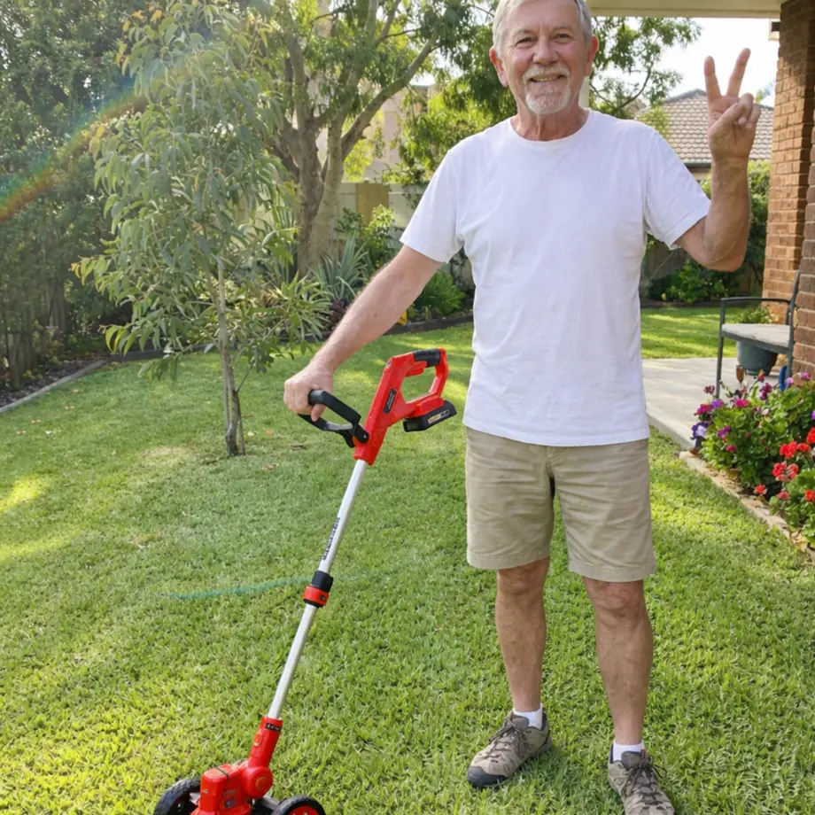
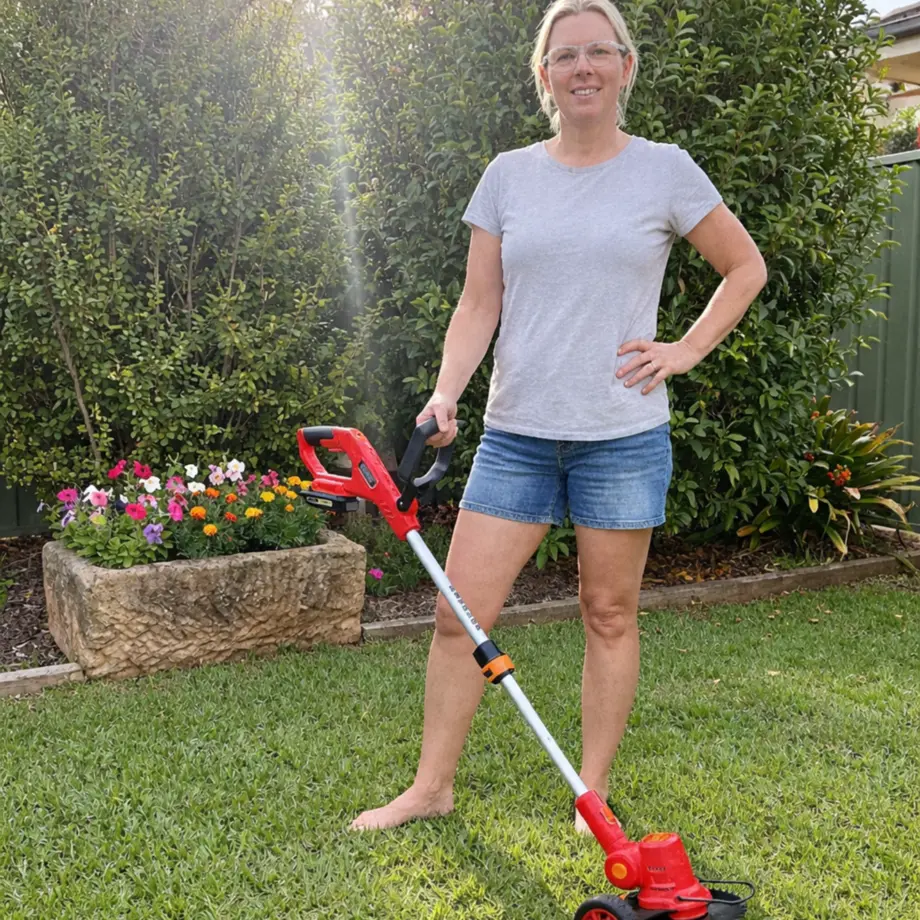

Ajuste a haste
Ajuste o comprimento da haste e trave na altura em que você segura o cortador com conforto.
Cortador e aparador a bateria

Apare o gramado e acerte as bordas. Duas baterias inclusas em ambas as versões.
O vídeo mostra como as rodas apoiam o cortador no gramado e como fica o acabamento rente ao piso.
Ver onde usarSelecione uma área do jardim para ver como usar o cortador.


Na versão com rodas, você pode retirar o suporte para aparar rente ao piso e alcançar cantos estreitos.
Ver as duas versõesAs duas versões incluem carregador bivolt, duas baterias e oito peças de corte.

Ajuste o comprimento da haste e trave na altura em que você segura o cortador com conforto.
Consulte o manual para escolher e instalar a peça adequada à vegetação.
Carregue as duas baterias antes de começar e deixe a segunda à mão para a troca.
Compare partida, manutenção e tipos de uso.
 GramaZero | Cortador a gasolina | |
|---|---|---|
| Energia | 2 baterias recarregáveis | Reabastecer com gasolina |
| Partida | Acionamento por botão | Por corda ou elétrica (varia por modelo) |
| Acabamento | Rodas removíveis na versão com rodas | Um aparador pode ajudar nos cantos |
| Manutenção | Recarga e limpeza da ferramenta | Manutenção do motor conforme o manual |
| Uso indicado | Quintais, bordas e canteiros | Gramados abertos, conforme o porte |
Veja as fotos de cada versão e selecione a quantidade.
Cor conforme disponibilidade do lote. Você confirma os dados e paga na próxima etapa.
A versão com rodas inclui um conjunto removível que apoia o cortador no gramado. A versão sem rodas é usada como aparador de mão.
O GramaZero funciona a bateria durante o uso. A tomada serve para recarregar as baterias com o carregador bivolt.
A autonomia varia com a altura e a densidade da grama e com o tipo de corte.
O GramaZero é voltado à manutenção residencial. Em áreas maiores, pode ser usado para acabamento em bordas e cantos.
A cor depende da disponibilidade do lote.
Relatos de uso publicados pela Tratorando, resumidos abaixo.

Maria Aparecida destacou a leveza do cortador em comparação com as ferramentas que costumava usar.

Carlos Alberto contou que o cortador o surpreendeu na grama mais densa e facilitou o acabamento do quintal.

Fernanda Rodrigues disse que, no quintal dela, ficou mais prático passar do gramado ao acabamento com a mesma ferramenta.